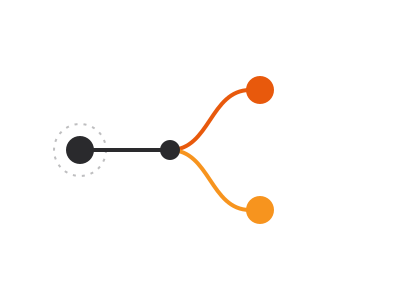

Health-Flare
An open-source, offline-only chronic illness symptom tracker, and the successor to Flaredown. Built so people managing a chronic condition can track symptoms, triggers, and treatments without their data leaving their device.
This is our proof-of-practice work: real software we build and maintain in the open, under the same security-and-privacy-first approach we bring to client work.

An open-source, offline-only chronic illness symptom tracker, and the successor to Flaredown. Built so people managing a chronic condition can track symptoms, triggers, and treatments without their data leaving their device.
An open-source, offline-only cycle and reproductive health tracker - the second app in the Health-Flare family, built on the same offline-first, privacy-first foundation.
An index of open-source health tools, planned as a resource for finding privacy-respecting software in a space dominated by closed, data-harvesting apps. Not yet built - this is a stated intention, not a live product.
Health-Flare and Inner Flare aren't demos or side projects - they're where we prove out the same principles we apply to client work: offline-first where it's viable, no unnecessary data collection, and software that stays useful without a subscription or a data-sharing agreement attached. Read the origin story on the About page.